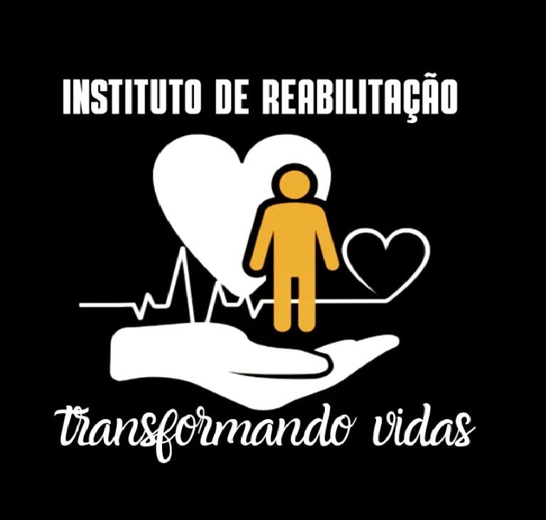
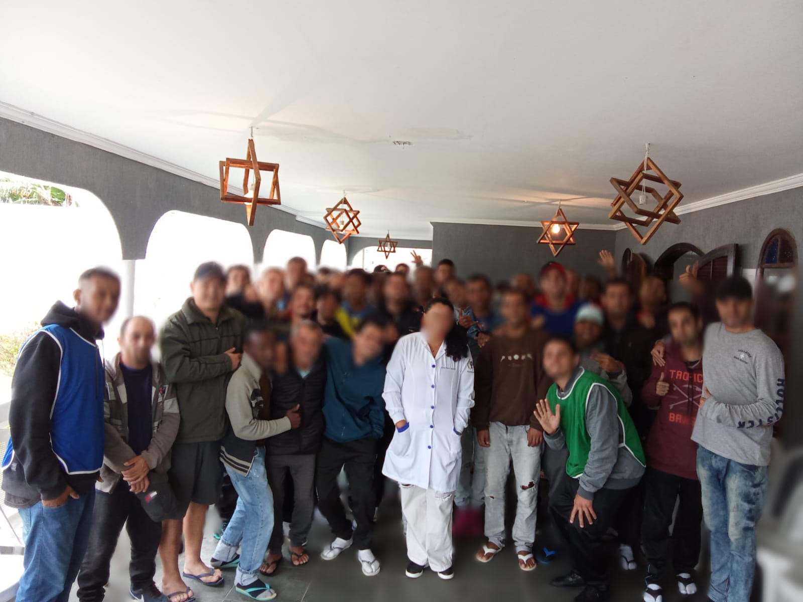
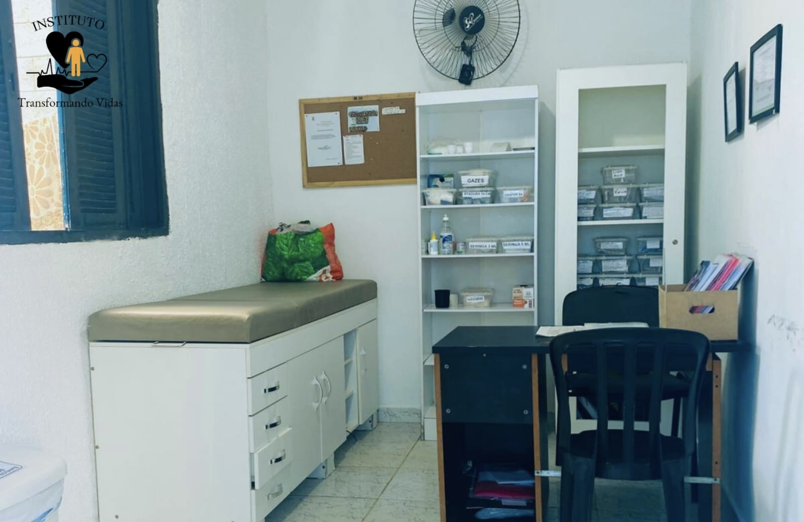
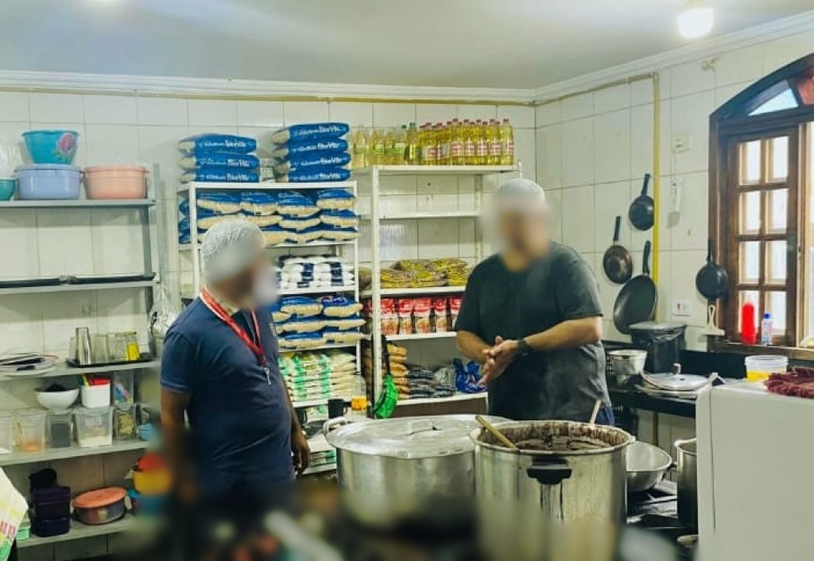
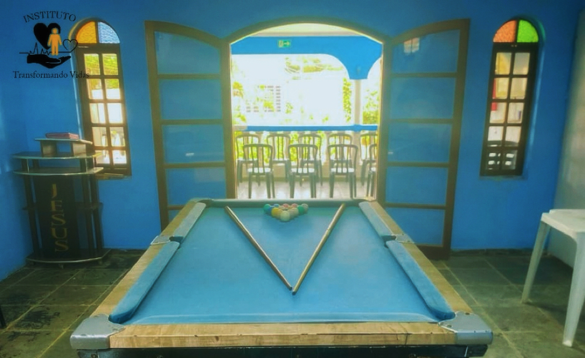
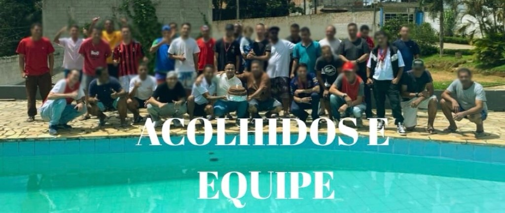
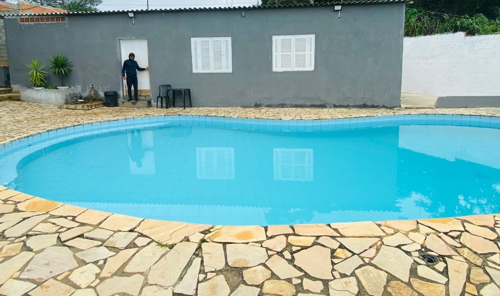
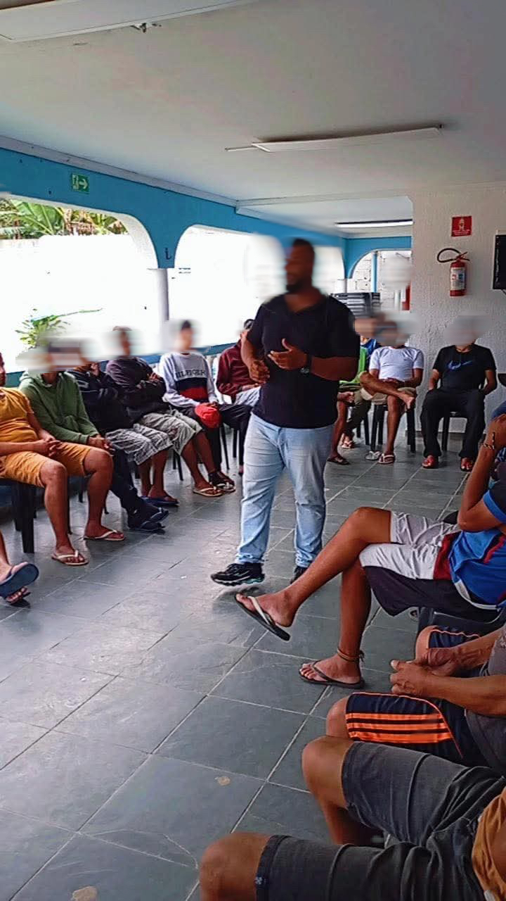
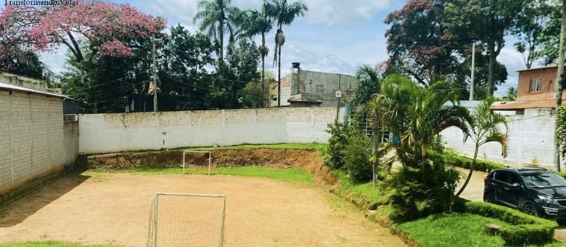
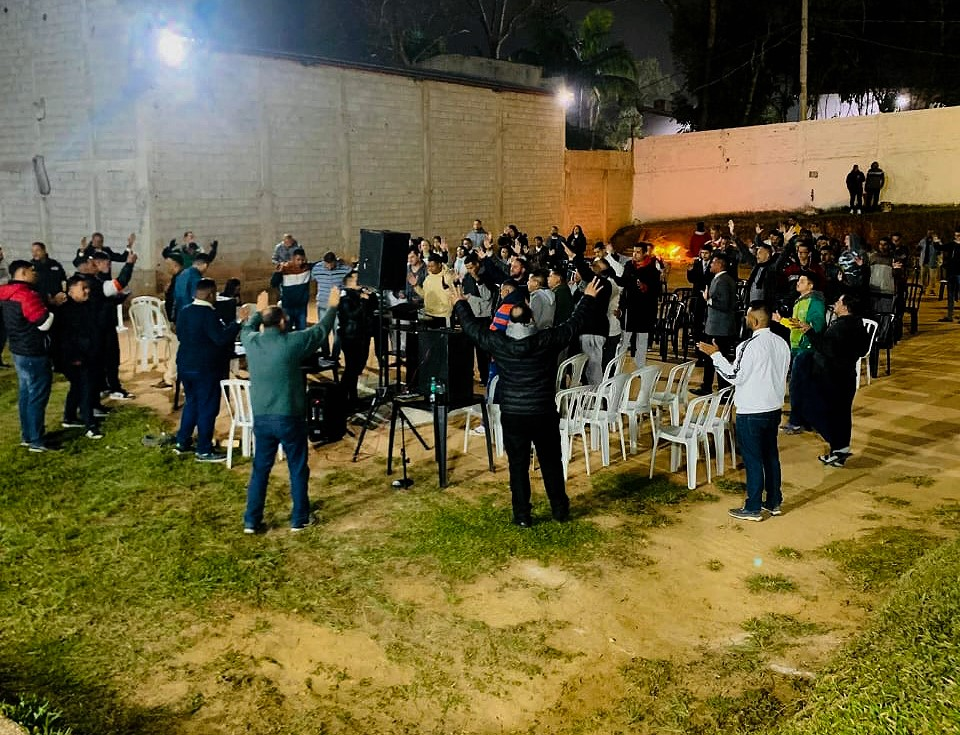

Instituto de Reabilitação
Transformando Vidas
Acolhimento humanizado e specializado.
Oferecemos suporte focado em segurança, bem-estar e ambiente familiar em nossas Unidades Masculina, Feminina, Lar de Idosos, com plantão e atendimento 24 horas.
Ambiente Familiar
Espaço focado na reconstrução da cidadania, segurança coletiva e no bem-estar integral de cada acolhido.
Alimentação Saudável
3 refeições diárias completas e balanceadas para suporte físico: café da manhã, almoço e jantar.
Segurança & Cuidado
Estrutura totalmente planejada para oferecer monitoramento, retaguarda activa e acolhimento contínuo.
Nossas Unidades Especializadas
Estruturas direcionadas para atender com dignidade, respeito e foco nas necessidades de cada público.
Unidade Masculina
Tratamento especializado e terapêutico focado na reabilitação, resgate da autonomia e reconstrução de vínculos para homens.
Clínica Feminina
Acolhimento humanizado com suporte biopsicossocial direcionado, garantindo total privacidade, acolhimento e cuidados específicos para mulheres.
Lar de Idosos
Espaço de cuidado continuado e atenção integral para a terceira idade, focado na qualidade de vida, bem-estar, saúde e convivência harmônica.
Nossa Rotina & Infraestrutura
Imagens reais do nosso cotidiano, espaços de convivência e suporte terapêutico especializado.

Encontro Terapêutico
Um momento de troca, compreensão and acolhimento focado com nossa equipe de psicologia.

Apoio de Enfermagem
Ambiente preparado para triagem, controle de medicações e suporte ativo à saúde.

Cozinha & Nutrição
Estrutura organizada para o preparo diário de refeições saudáveis e balanceadas.

Convivência & Jogos
Espaço de descompressão com mesa de bilhar para interagir e relaxar a mente de forma saudável.

União & Respeito
Cultura baseada na entreajuda, no convívio em harmonia e no apoio mútuo diário entre coordenação e acolhidos.

Área de Lazer
Piscina ampla para atividades físicas orientadas, momentos de descanso e bem-estar físico.

Palestras Educativas
Ciclos teóricos conduzidos por profissionais para conscientização e desenvolvimento pessoal.

Campo de Futebol
Gramado excelente para a prática de esportes coletivos, essencial no desenvolvimento da disciplina e saúde.

Espiritualidade & Fé
Momentos de oração, cultos e reflexões diárias que fortalecem o espírito para uma jornada duradoura de restauração.
Áreas Comuns, Privativas e Lazer
Prazos Recomendados para o Tratamento
A reabilitação é um processo de etapas. De acordo com o diagnóstico e necessidades, trabalhamos com os seguintes ciclos de evolução:
⏱️ Estágio 01 (6 Meses)
- Foco em Desintoxicação e Estabilização
- Adaptação física e mental à nova rotina
- Início da conscientização sobre a dependência
- Identificação de gatilhos comportamentais
📆 Estágio 02 (9 Meses)
- Foco em Reestruturação Emocional
- Mudança profunda de padrões e valores
- Aprofundamento na terapia individual e em grupo
- Fortalecimento psicológico para novos hábitos
🚀 Estágio 03 (12 Meses)
- Foco em Reinserção e Manutenção
- Plano de Prevenção a Recaída (P.P.R.) avançado
- Preparação integral para o retorno seguro ao social
- Consolidação da autonomia e propósito de vida
Pilares Fundamentais do Nosso Método
Físico & Psíquico
Desintoxicação corporal com suporte de enfermagem e psiquiatria para estabilizar as funções mentais e orgânicas.
Emocional & Cognitivo
Trabalho terapêutico focado em ressignificar comportamentos e mudar a forma de reagir às pressões do dia a dia.
Espiritual & Social
Resgate de valores morais, da fé e reconstrução dos laços familiares protetivos para sustentar o novo caminhar.
Suporte Multidisciplinar 24h
Contamos com Coordenadores, Monitores de pátio e Terapeutas dedicados em regime de plantão contínuo (24 horas por dia) para garantir total retaguarda, acolhimento e a segurança coletiva.
Cronograma de Atendimentos
- Atendimento Pastoral: Diariamente por pastores altamente capacitados
- Atendimento Terapêutico: Semanal individualizado e focado
- Atendimento Psiquiátrico: Periódico e especializado (Acompanhamento médico à parte)
Onde Estamos & Contato Direto
📍 Rua Assurbanipal, Nº 107 - Jd Novo Jaú, São Paulo - SP
Horário de Atendimento Administrativo: Segunda a Sexta, das 09h às 17h